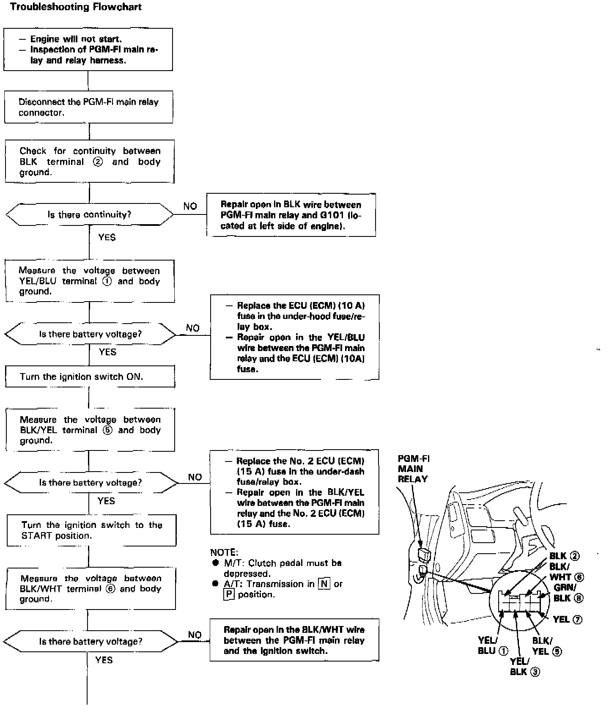
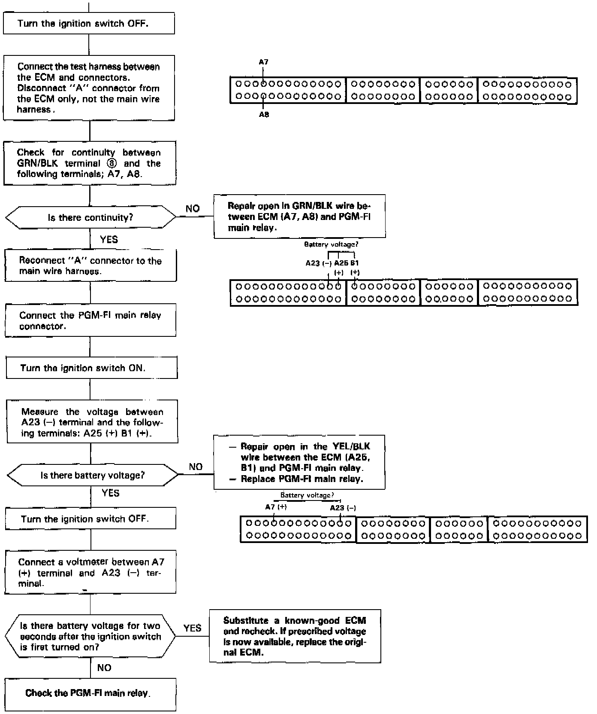

PGM-FI Main Relay Circuit Troubleshooting


The PGM-FI main relay actually contains two individual relays. This relay is located at the left side of the cowl. One relay is energized whenever the ignition is on which supplies the battery voltage to the engine control module, power to the fuel injectors, and power for the second relay. The second relay is energized for two seconds when the ignition is switched on, and when the engine is running which supplies power to the fuel pump.